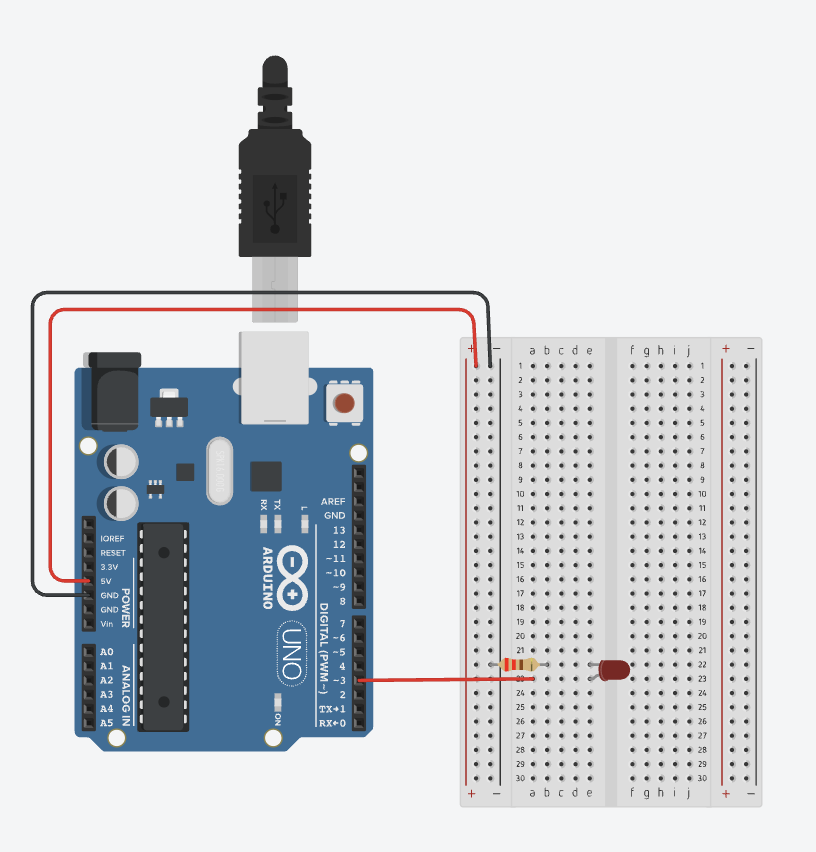

Milestone 2: Mobility
Robot steering

// Basic robot steering
// 2 H-bridge
int main(void) {
// Set LED pins as outputs
DDRB = 0b00001111;
while(1) {
// Call functions to steer in different directions
drive_forward(1000);
drive_backward(1000);
turn_right(1000);
turn_left(1000);
}
}
// Functions for steering - drive forward, turn right, etc.
int drive_forward(int t) { // Green LEDs on, red LEDs off
PORTB |= 0b00001010; // Set pins 9 and 11 high
PORTB &= 0b11111010; // Set pins 8 and 10 low
_delay_ms(t); // Wait for t milliseconds
}
int drive_backward(int t) { // Red LEDs on, green LEDs off
PORTB |= 0b00000101; // Set pins 8 and 10 high
PORTB &= 0b11110101; // Set pins 9 and 11 low
_delay_ms(t); // Wait for t milliseconds
}
int turn_right(int t) { // Left green LED on, right red LED on
PORTB |= 0b00001001; // Set pins 8 and 11 high
PORTB &= 0b11111001; // Set pins 9 and 10 low
_delay_ms(t); // Wait for t milliseconds
}
int turn_left(int t) { // Right green LED on, left red LED on
PORTB |= 0b00000110; // Set pins 9 and 10 high
PORTB &= 0b11110110; // Set pins 8 and 11 low
_delay_ms(t); // Wait for t milliseconds
}
LEDs were used instead of motors to demonstrate this functionality, on TinkerCad.
DC Motor Speed Control (Timer 2 PWM)

// DC Motor Speed Control
// Generate PWM Signal w/ Timer 2
int delaytime = 10;
int main(void) {
DDRD = 0b00001000; // Set pin 3 as an output (OC2B on pinout diagram)
// Set timer 2 control registers
// Mode 1 (phase change PWM), clear on up-counting, prescaler to 256
// User different prescaler values to see what works best with our motor
TCCR2A = 0b00100001;
TCCR2B = 0b00000110;
// Change value of OCR2B to change PWM duty cycle
// Oscillate between 0% (0 output compare register value) to 100% (255)
while (1) {
while(OCR2B < 255) { // Increase speed from 0% to 100&
OCR2B++; // Increment output compare register
Serial.println(OCR2B);
_delay_ms(delaytime);
}
while(OCR2B > 0) { // Increase speed from 100% to 0&
OCR2B--; // Decrement output compare register
Serial.println(OCR2B);
_delay_ms(delaytime);
}
}
}
Our two physical DC motors rotate at different speeds.
For the robot to drive in a straight line, we need to calibrate the motors so they spin at similar speeds.
This is achieved by adjusting the duty cycle of each motor using Pulse Width Modulation (PWM), PWM Mode (phase-correct, clear on up-counting).
At a 100% duty cycle, when instructed to drive straight, the robot veers slightly to one side.
Similarly, when commanded to turn 90 degrees, it only completes about two-thirds of the turn.
By reducing the duty cycle of the faster motor and using a trial-and-error approach, we can match the rotation speeds of both motors more closely.
For this demonstration, TIMER2 with 8 bit resolution (0-255 output compare register value corresponding to 0%-100% duty cycle) is used.
For our robot, higher resolution 16 bit TIMER1 will be reserved for the color sensor and ultrasonic sensor.
-
Waveform Generation Mode (WGM) bits: Mode 1 (Phase Correct PWM)
-
Clock Select (CS) bits: Set prescaler to 1 (no prescaling), prescaler to 256 ()
-
COM (Compare Output Mode) bits; Clear (Output Compare Pin) OC2B on up-counting